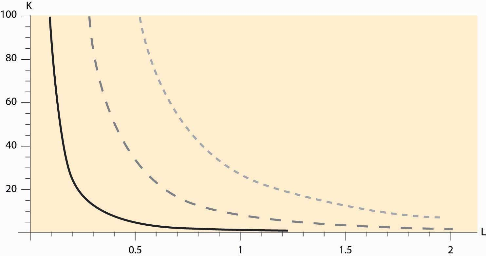
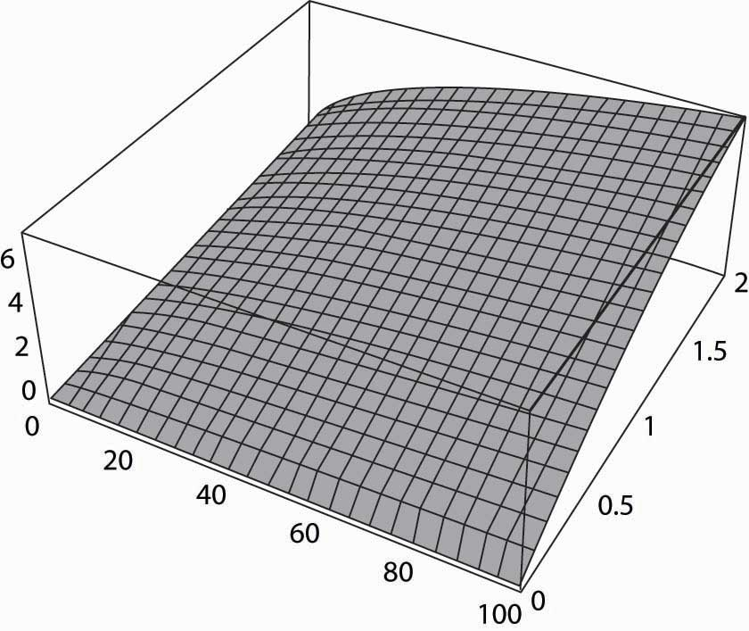
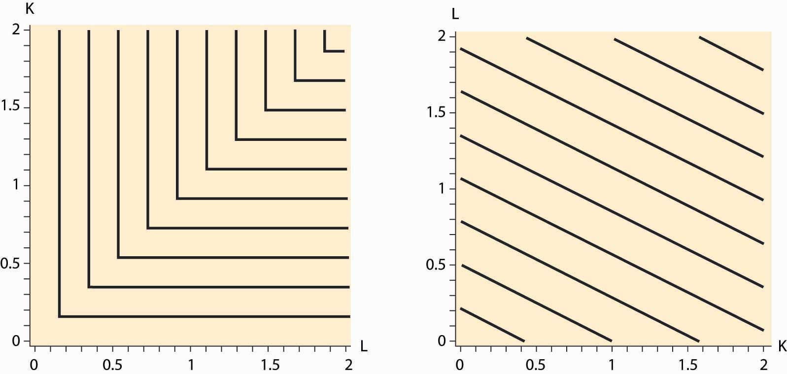
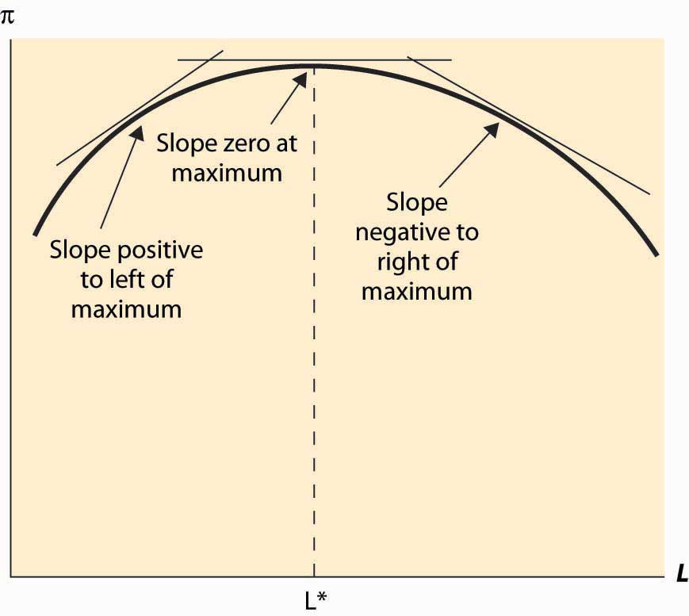
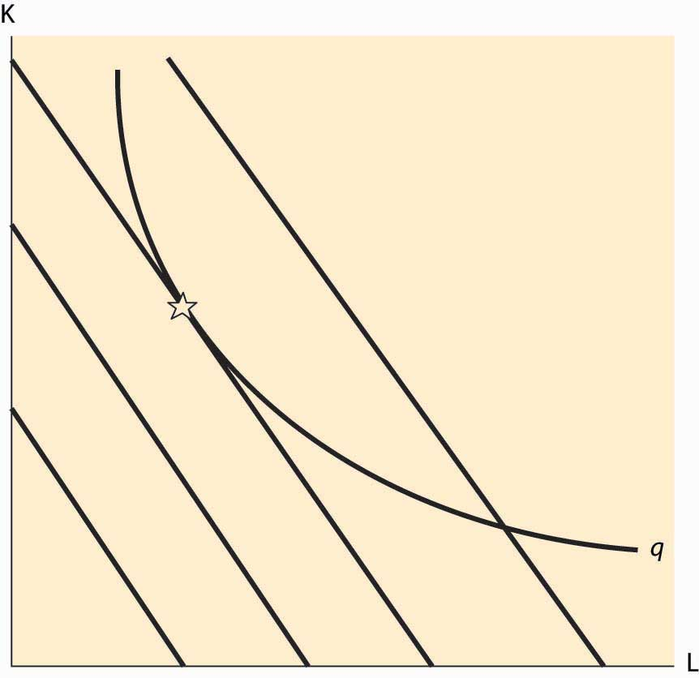

The basic theory of the firm regards the firm as a mechanism for transforming productive inputs into final and intermediate goods and services. This process is known as production. For instance, the smelting of copper or gold removes impurities and makes the resulting product into a more valuable substance. Silicon Valley transforms silicon, along with a thousand other chemicals and metals, into computer chips used in everything from computers to toasters. Cooking transforms raw ingredients into food, by adding flavor and killing bacteria. Moving materials to locations where they have higher value is a form of production. Moving stone to a building site to construct an exterior wall, bringing the King Tut museum exhibit to Chicago, or qualifying a basketball team for the league playoffs are all examples of different types of production. According to this simple view, a firm is comprised of a technology or set of technologies for transforming materials into valuable goods and to maximize profits. This “production function” view of the firm is appropriate for some environments, when products and services are standardized and technologies are widely available. However, in other settings, this way of thinking about the firm is misleading, especially when the internal organization of the firm is important. Nevertheless, the “production function” model of the firm is a natural starting point to begin our investigation of competition.
There are four varieties of firms created in law, although these types have several subtypes. At one end is the proprietorshipA firm is owned by a single individual (the proprietor) or a family., which is a firm owned by a single individual (the proprietor) or perhaps by a family. The family farm and many “mom-and-pop” restaurants and convenience stores are operated proprietorships. Debts accrued by the proprietorship are the personal responsibility of the proprietor. Legal and accounting firms are often organized as partnershipsFirms owned by several individuals who share profits as well as liabilities of the firm according to a specified formula that varies by the relative contribution and potential cost of each partner.. Partnerships are firms owned by several individuals who share profits as well as liabilities of the firm according to a specified formula that varies by the relative contribution and potential cost of each partner in the firm. Thus, if a partner in a law firm steals a client’s money and disappears, the other partners may be responsible for absorbing some portion of the loss. In contrast, a corporationA single entity owned by shareholders. is treated legally as a single entity owned by shareholders. Like a person, a corporation can incur debt and is therefore responsible for repayment. This stands in contrast to a partnership where particular individuals may be liable for debts incurred. Hence, when the energy trader company Enron collapsed, the Enron shareholders lost the value of their stock; however, they were not responsible for repaying the debt that the corporation had incurred. Moreover, company executives are also not financially responsible for debts of the corporation, provided they act prudentially. If a meteor strikes a manufacturer and destroys the corporation, the executives are not responsible for the damage or for the loans that may not be repaid as a result. On the other hand, executives are not permitted to break the law, as was the case with corporate officers at Archer Daniels Midland, the large agricultural firm who colluded to fix the price of lysine and were subsequently fined and jailed for their misdeeds, as was the corporation.
Corporations who shield company executives and shareholders from fines and punishments are said to offer “limited liability.” So why would anyone in his or her right mind organize a firm as a proprietorship or a partnership? The explanation is that it is costly to incorporate businesses—about $1,000 per year at the time of this writing—and corporations are taxed, so that many small businesses find it less costly to be organized as proprietorships. Moreover, it may not be possible for a family-owned corporation to borrow money to open a restaurant; for example, potential lenders may fear not being repaid in the event of bankruptcy, so they insist that owners accept some personal liability. So why are professional groups organized as partnerships and not as corporations? The short answer is that a large variety of hybrid, organizational forms exist instead. The distinctions are blurred, and organizations like “Chapter S Corporations” and “Limited Liability Partnerships” offer the advantages of partnerships (including avoidance of taxation) and corporations. The disadvantages of these hybrids are the larger legal fees and greater restrictions on ownership and freedom to operate that exist in certain states and regions.
Usually proprietorships are smaller than partnerships, and partnerships are smaller than corporations, though there are some very large partnerships (e.g., the Big Four accounting firms) as well as some tiny corporations. The fourth kind of firm may be of any size. It is distinguished primarily by its source of revenue and not by how it is internally organized. The nonprofit firmFirm that is prohibited from distributing a profit to its owners. is prohibited from distributing a profit to its owners. Religious organizations, academic associations, environmental groups, most zoos, industry associations, lobbying groups, many hospitals, credit unions (a type of bank), labor unions, private universities, and charities are all organized as nonprofit corporations. The major advantage of nonprofit firms is their tax-free status. In exchange for avoiding taxes, nonprofits must be engaged in government-approved activities, suggesting that nonprofits operate for the social benefit of some segment of society. So why can’t you establish your own nonprofit that operates for your personal benefit in order to avoid taxes? Generally, you alone isn’t enough of a socially worthy purpose to meet the requirements to form a nonprofit.Certainly some of the nonprofit religious organizations created by televangelists suggest that the nonprofit established for the benefit of a single individual isn’t too far-fetched. Moreover, you can’t establish a nonprofit for a worthy goal and not serve that goal but just pay yourself all the money the corporation raises, because nonprofits are prohibited from overpaying their managers. Overpaying the manager means not serving the worthy corporate goal as well as possible. Finally, commercial activities of nonprofits are taxable. Thus, when the nonprofit zoo sells stuffed animals in the gift shop, generally the zoo collects sales tax and is potentially subject to corporate taxes.
The modern corporation is a surprisingly recent invention. Prior to World War I, companies were typically organized as a pyramid with a president at the top and vice presidents who reported to him at the next lower level, and so on. In a pyramid, there is a well-defined chain of command, and no one is ever below two distinct managers of the same level. The problem with a pyramid is that two retail stores that want to coordinate have to contact their managers, and possibly their manager’s managers, and so on up the pyramid until a common manager is reached. There are circumstances where such rigid decision making is unwieldy, and the larger the operation of a corporation, the more unwieldy it gets.
Four companies—Sears, DuPont, General Motors, and Standard Oil of New Jersey (Exxon)—found that the pyramid didn’t work well for them. Sears found that its separate businesses of retail stores and mail order required a mix of shared inputs (purchased goods) but distinct marketing and warehousing of these goods. Consequently, retail stores and mail order needed to be separate business units, but the purchasing unit has to service both of them. Similarly, DuPont’s military business (e.g., explosives) and consumer chemicals were very different operations serving different customers yet often selling the same products so that again the inputs needed to be centrally produced and to coordinate with two separate corporate divisions. General Motors’s many car divisions are “friendly rivals,” in which technology and parts are shared across the divisions, but the divisions compete in marketing their cars to consumers. Again, technology can’t be housed under just one division, but instead is common to all. Finally, Standard Oil of New Jersey was attempting to create a company that managed oil products from oil exploration all the way through to pumping gasoline into automobile gas tanks. With such varied operations all over the globe, Standard Oil of New Jersey required extensive coordination and found that the old business model needed to be replaced. These four companies independently invented the modern corporation, which is organized into separate business units. These business units run as semiautonomous companies themselves, with one business unit purchasing inputs at a negotiated price from another unit and selling outputs to a third unit. The study of the internal organization of firms and its ramifications for competitiveness is fascinating but beyond the scope of this book.If you want to know more about organization theory, I happily recommend Competitive Solutions: The Strategist’s Toolkit, by R. Preston McAfee, Princeton: Princeton University Press, 2002.
The firm transforms inputs into outputs. For example, a bakery takes inputs like flour, water, yeast, labor, and heat and makes loaves of bread. An earth moving company combines capital equipment, ranging from shovels to bulldozers with labor in order to digs holes. A computer manufacturer buys parts “off-the-shelf” like disk drives and memory, with cases and keyboards, and combines them with labor to produce computers. Starbucks takes coffee beans, water, some capital equipment, and labor to brew coffee.
Many firms produce several outputs. However, we can view a firm that is producing multiple outputs as employing distinct production processes. Hence, it is useful to begin by considering a firm that produces only one output. We can describe this firm as buying an amount x1 of the first input, x2 of the second input, and so on (we’ll use xn to denote the last input), and producing a quantity of the output. The production function that describes this process is given by y = f(x1, x2, … , xn).
The production functionThe mapping from inputs to an output or outputs. is the mapping from inputs to an output or outputs.
For the most part we will focus on two inputs in this section, although the analyses with more than inputs is “straightforward.”
Example: The Cobb-Douglas production functionA production function that is the product of each input, x, raised to a given power. is the product of each input, x, raised to a given power. It takes the form
The constants a1 through an are typically positive numbers less than one. For example, with two goods, capital K and labor L, the Cobb-Douglas function becomes a0KaLb. We will use this example frequently. It is illustrated, for a0 = 1, a = 1/3, and b = 2/3, in Figure 9.1 "Cobb-Douglas isoquants".
Figure 9.1 Cobb-Douglas isoquants
Figure 9.1 "Cobb-Douglas isoquants" illustrates three isoquants for the Cobb-Douglas production function. An isoquantCurves that describe all the combinations of inputs that produce the same level of output., which means “equal quantity,” is a curve that describes all the combinations of inputs that produce the same level of output. In this case, given a = 1/3 and b = 2/3, we can solve y = KaLb for K to obtain K = y3 L-2. Thus, K = L-2 gives the combinations of inputs yielding an output of 1, which is denoted by the dark, solid line in Figure 9.1 "Cobb-Douglas isoquants" The middle, gray dashed line represents an output of 2, and the dotted light-gray line represents an output of 3. Isoquants are familiar contour plots used, for example, to show the height of terrain or temperature on a map. Temperature isoquants are, not surprisingly, called isotherms.
Figure 9.2 The production function
Isoquants provide a natural way of looking at production functions and are a bit more useful to examine than three-dimensional plots like the one provided in Figure 9.2 "The production function".
The fixed-proportions production function comes in the form
The fixed-proportions production functionA production function that requires inputs be used in fixed proportions to produce output. is a production function that requires inputs be used in fixed proportions to produce output. It has the property that adding more units of one input in isolation does not necessarily increase the quantity produced. For example, the productive value of having more than one shovel per worker is pretty low, so that shovels and diggers are reasonably modeled as producing holes using a fixed-proportions production function. Moreover, without a shovel or other digging implement like a backhoe, a barehanded worker is able to dig so little that he is virtually useless. Ultimately, the size of the holes is determined by min {number of shovels, number of diggers}. Figure 9.3 "Fixed-proportions and perfect substitutes" illustrates the isoquants for fixed proportions. As we will see, fixed proportions make the inputs “perfect complements.”
Figure 9.3 Fixed-proportions and perfect substitutes
Two inputs K and L are perfect substitutes in a production function f if they enter as a sum; so that f(K, L, x3, … , xn) = g(K + cL, x3, … , xn) for a constant c. Another way of thinking of perfect substitutesTwo goods that can be substituted for each other at a constant rate while maintaining the same output level. is that they are two goods that can be substituted for each other at a constant rate while maintaining the same output level. With an appropriate scaling of the units of one of the variables, all that matters is the sum of the two variables, not their individual values. In this case, the isoquants are straight lines that are parallel to each other, as illustrated in Figure 9.3 "Fixed-proportions and perfect substitutes".
The marginal productThe derivative of the production function with respect to an input. of an input is just the derivative of the production function with respect to that input.This is a partial derivative, since it holds the other inputs fixed. Partial derivatives are denoted with the symbol δ. An important property of marginal product is that it may be affected by the level of other inputs employed. For example, in the Cobb-Douglas case with two inputsThe symbol α is the Greek letter “alpha.” The symbol β is the Greek letter “beta.” These are the first two letters of the Greek alphabet, and the word alphabet itself originates from these two letters. and for constant A,
the marginal product of capital is
If α and β are between zero and one (the usual case), then the marginal product of capital is increasing in the amount of labor, and it is decreasing in the amount of capital employed. For example, an extra computer is very productive when there are many workers and a few computers, but it is not so productive where there are many computers and a few people to operate them.
The value of the marginal productThe marginal product times the price of the output. of an input is the marginal product times the price of the output. If the value of the marginal product of an input exceeds the cost of that input, it is profitable to use more of the input.
Some inputs are easier to change than others. It can take 5 years or more to obtain new passenger aircraft, and 4 years to build an electricity generation facility or a pulp and paper mill. Very skilled labor such as experienced engineers, animators, and patent attorneys are often hard to find and challenging to hire. It usually requires one to spend 3 to 5 years to hire even a small number of academic economists. On the other hand, it is possible to buy shovels, telephones, and computers or to hire a variety of temporary workers rapidly, in a day or two. Moreover, additional hours of work can be obtained from an existing labor force simply by enlisting them to work “overtime,” at least on a temporary basis. The amount of water or electricity that a production facility uses can be varied each second. A dishwasher at a restaurant may easily use extra water one evening to wash dishes if required. An employer who starts the morning with a few workers can obtain additional labor for the evening by paying existing workers overtime for their hours of work. It will likely take a few days or more to hire additional waiters and waitresses, and perhaps several days to hire a skilled chef. You can typically buy more ingredients, plates, and silverware in one day, whereas arranging for a larger space may take a month or longer.
The fact that some inputs can be varied more rapidly than others leads to the notions of the long run and the short run. In the short run, only some inputs can be adjusted, while in the long run all inputs can be adjusted. Traditionally, economists viewed labor as quickly adjustable and capital equipment as more difficult to adjust. That is certainly right for airlines—obtaining new aircraft is a very slow process—for large complex factories, and for relatively low-skilled, and hence substitutable, labor. On the other hand, obtaining workers with unusual skills is a slower process than obtaining warehouse or office space. Generally speaking, the long-run inputs are those that are expensive to adjust quickly, while the short-run factors can be adjusted in a relatively short time frame. What factors belong in which category is dependent on the context or application under consideration.
Consider an entrepreneur who would like to maximize profit, perhaps by running a delivery service. The entrepreneur uses two inputs, capital K (e.g., trucks) and labor L (e.g., drivers), and rents the capital at cost r per dollar of capital. The wage rate for drivers is w. The production function is F(K, L)—that is, given inputs K and L, the output is F(K, L). Suppose p is the price of the output. This gives a profit ofEconomists often use the symbol π, the Greek letter “pi,” to stand for profit. There is little risk of confusion because economics doesn’t use the ratio of the circumference to the diameter of a circle very often. On the other hand, the other two named constants, Euler’s e and i, the square root of -1, appear fairly frequently in economic analysis.
First, consider the case of a fixed level of K. The entrepreneur chooses L to maximize profit. The value L* of L that maximizes the function π must satisfy
This expression is known as a first-order conditionA mathematical condition for optimization stating that the first derivative is zero., a mathematical condition for optimization stating that the first derivative is zero.It is possible that L = 0 is the best that an entrepreneur can do. In this case, the derivative of profit with respect to L is not necessarily zero. The first-order condition instead would be either or L = 0, and The latter pair of conditions reflects the logic that either the derivative is zero and we are at a maximum, or L = 0, in which case a small increase in L must not cause π to increase. The first-order condition recommends that we add workers to the production process up to the point where the last worker’s marginal product is equal to his wage (or cost).
Figure 9.4 Profit-maximizing labor input
In addition, a second characteristic of a maximum is that the second derivative is negative (or nonpositive). This arises because, at a maximum, the slope goes from positive (since the function is increasing up to the maximum) to zero (at the maximum) to being negative (because the function is falling as the variable rises past the maximum). This means that the derivative is falling or that the second derivative is negative. This logic is illustrated in Figure 9.4 "Profit-maximizing labor input".
The second property is known as the second-order conditionA mathematical condition for maximization stating that the second derivative is nonpositive., a mathematical condition for maximization stating that the second derivative is nonpositive.The orders refer to considering small, but positive, terms Δ, which are sent to zero to reach derivatives. The value Δ2, the second-order term, goes to zero faster than Δ, the first-order term. It is expressed as
This is enough of a mathematical treatment to establish comparative statics on the demand for labor. Here we treat the choice L* as a function of another parameter—the price p, the wage w, or the level of capital K. For example, to find the effect of the wage on the labor demanded by the entrepreneur, we can write
This expression recognizes that the choice L* that the entrepreneur makes satisfies the first-order condition and results in a value that depends on w. But how does it depend on w? We can differentiate this expression to obtain
or
The second-order condition enables one to sign the derivative. This form of argument assumes that the choice L* is differentiable, which is not necessarily true.
Digression: In fact, there is a form of argument that makes the point without calculus and makes it substantially more general. Suppose w1 < w2 are two wage levels and that the entrepreneur chooses L1 when the wage is w1 and L2 when the wage is w2. Then profit maximization requires that these choices are optimal. In particular, when the wage is w1, the entrepreneur earns higher profit with L1 than with L2:
When the wage is w2, the entrepreneur earns higher profit with L2 than with L1:
The sum of the left-hand sides of these two expressions is at least as large as the sum of the right-hand side of the two expressions:
A large number of terms cancel to yield the following:
This expression can be rearranged to yield the following:
This shows that the higher labor choice must be associated with the lower wage. This kind of argument, sometimes known as a revealed preferenceKind that states that choice implies preference. kind of argument, states that choice implies preference. It is called “revealed preference” because choices by consumers were the first place the type of argument was applied. It can be very powerful and general, because issues of differentiability are avoided. However, we will use the more standard differentiability-type argument, because such arguments are usually more readily constructed.
The effect of an increase in the capital level K on the choice by the entrepreneur can be calculated by considering L* as a function of the capital level K:
Differentiating this expression with respect to K, we obtain
or
We know the denominator of this expression is not positive, thanks to the second-order condition, so the unknown part is the numerator. We then obtain the conclusion that
an increase in capital increases the labor demanded by the entrepreneur if and decreases the labor demanded if
This conclusion looks like gobbledygook but is actually quite intuitive. Note that means that an increase in capital increases the derivative of output with respect to labor; that is, an increase in capital increases the marginal product of labor. But this is, in fact, the definition of a complement! That is, means that labor and capital are complements in production—an increase in capital increases the marginal productivity of labor. Thus, an increase in capital will increase the demand for labor when labor and capital are complements, and it will decrease the demand for labor when labor and capital are substitutes.
This is an important conclusion because different kinds of capital may be complements or substitutes for labor. Are computers complements or substitutes for labor? Some economists consider that computers are complements to highly skilled workers, increasing the marginal value of the most skilled, but substitutes for lower-skilled workers. In academia, the ratio of secretaries to professors has fallen dramatically since the 1970s as more and more professors are using machines to perform secretarial functions. Computers have increased the marginal product of professors and reduced the marginal product of secretaries, so the number of professors rose and the number of secretaries fell.
The revealed preference version of the effect of an increase in capital is to posit two capital levels, K1 and K2, with associated profit-maximizing choices L1 and L2. The choices require, for profit maximization, that
and
Again, adding the left-hand sides together produces a result at least as large as the sum of the right-hand sides:
Eliminating redundant terms yields
or
or
Here we use the standard convention that
or
and finally
Thus, if K2 > K1 and for all K and L, then L2 ≥ L1; that is, with complementary inputs, an increase in one input increases the optimal choice of the second input. In contrast, with substitutes, an increase in one input decreases the other input. While we still used differentiability of the production function to carry out the revealed preference argument, we did not need to establish that the choice L* was differentiable to perform the analysis.
Example (Labor demand with the Cobb-Douglas production function): The Cobb-Douglas production function has the form for constants A, α, and β, all positive. It is necessary for β < 1 for the solution to be finite and well defined. The demand for labor satisfies
or
When α + β = 1, L is linear in capital. Cobb-Douglas production is necessarily complementary; that is, an increase in capital increases labor demanded by the entrepreneur.
The demand for hamburgers has a constant elasticity of 1 of the form x(p) = 8,000 p – 1. Each entrant in this competitive industry has a fixed cost of $2,000 and produces hamburgers per year, where x is the amount of meat in pounds.
A company that produces software needs two inputs, programmers (x) at a price of p and computers (y) at a price of r. The output is given by T = 4x1/3y1/3, measured in pages of code.
A toy factory costs $2 million to construct, and the marginal cost of the qth toy is max[10, q2/1,000].
When capital K can’t be adjusted in the short run, it creates a constraint, on the profit available, to the entrepreneur—the desire to change K reduces the profit available to the entrepreneur. There is no direct value of capital because capital is fixed. However, that doesn’t mean we can’t examine its value. The value of capital is called a shadow valueThe value associated with a constraint., which refers to the value associated with a constraint. Shadow value is well-established jargon.
What is the shadow value of capital? Let’s return to the constrained, short-run optimization problem. The profit of the entrepreneur is
The entrepreneur chooses the value L* to maximize profit; however, he is constrained in the short run with the level of capital inherited from a past decision. The shadow value of capital is the value of capital to profit, given the optimal decision L*. Because the shadow value of capital is
Note that this value could be negative if the entrepreneur might like to sell some capital but can’t, perhaps because it is installed in the factory.
Every constraint has a shadow value. The term refers to the value of relaxing the constraint. The shadow value is zero when the constraint doesn’t bind; for example, the shadow value of capital is zero when it is set at the profit-maximizing level. Technology binds the firm; the shadow value of a superior technology is the increase in profit associated with it. For example, parameterize the production technology by a parameter a, so that aF(K, L) is produced. The shadow value of a given level of a is, in the short run,
A term is vanishing in the process of establishing the shadow value. The desired value L* varies with the other parameters like K and a, but the effect of these parameters on L* doesn’t appear in the expression for the shadow value of the parameter because at L*.
Over a long period of time, an entrepreneur can adjust both the capital and the labor used at the plant. This lets the entrepreneur maximize profit with respect to both variables K and L. We’ll use a double star, **, to denote variables in their long-run solution. The approach to maximizing profit over two c separately with respect to each variable, thereby obtaining the conditions
and
We see that, for both capital and labor, the value of the marginal product is equal to the purchase price of the input.
It is more challenging to carry out comparative statics exercises with two variables, and the general method won’t be developed here.If you want to know more, the approach is to arrange the two equations as a vector with x = (K, L), z = (r/p, w/p), so that and then differentiate to obtain which can then be solved for each comparative static. However, we can illustrate one example as follows.
Example: The Cobb-Douglas production function implies choices of capital and labor satisfying the following two first-order conditions:It is necessary for α + β < 1 for the solution to be finite and well defined.
To solve these expressions, first rewrite them to obtain
and
Then divide the first expression by the second expression to yield
or
This can be substituted into either equation to obtain
and
While these expressions appear complicated, the dependence on the output price p, and the input prices r and w, is quite straightforward.
How do equilibrium values of capital and labor respond to a change in input prices or output price for the Cobb-Douglas production function? It is useful to cast these changes in percentage terms. It is straightforward to demonstrate that both capital and labor respond to a small percentage change in any of these variables with a constant percentage change.
An important insight of profit maximization is that it implies minimization of costs of yielding the chosen output; that is, profit maximization entails efficient production.
The logic is straightforward. The profit of an entrepreneur is revenue minus costs, and the revenue is price times output. For the chosen output, then, the entrepreneur earns the revenue associated with the output, which is fixed since we are considering only the chosen output, minus the costs of producing that output. Thus, for the given output, maximizing profits is equivalent to maximizing a constant (revenue) minus costs. Since maximizing –C is equivalent to minimizing C, the profit-maximizing entrepreneur minimizes costs. This is important because profit-maximization implies not being wasteful in this regard: A profit-maximizing entrepreneur produces at least cost.
Figure 9.5 Tangency and Isoquants
There are circumstances where the cost-minimization feature of profit maximization can be used, and this is especially true when a graphical approach is taken. The graphical approach to profit maximization is illustrated in Figure 9.5 "Tangency and Isoquants". The curve represents an isoquant, which holds constant the output. The straight lines represent isocostLine that holds constant the expenditure on inputs. lines, which hold constant the expenditure on inputs. Isocost lines solve the problem rK + wL = constant and thus have slope Isocost lines are necessarily parallel—they have the same slope. Moreover, the cost associated with an isocost line rises the farther northeast we go in the graph, or the farther away from the origin.
What point on an isoquant minimizes total cost? The answer is the point associated with the lowest (most southwest) isocost that intersects the isoquant. This point will be tangent to the isoquant and is denoted by a star. At any lower cost, it isn’t possible to produce the desired quantity. At any higher cost, it is possible to lower cost and still produce the quantity.
The fact that cost minimization requires a tangency between the isoquant and the isocost has a useful interpretation. The slope of the isocost is minus the ratio of input prices. The slope of the isoquant measures the substitutability of the inputs in producing the output. Economists call this slope the marginal rate of technical substitutionThe amount of one input needed to make up for a decrease in another input while holding output constant., which is the amount of one input needed to make up for a decrease in another input while holding output constant. Thus, one feature of cost minimization is that the input price ratio equals the marginal rate of technical substitution.
How much does it cost to produce a given quantity q? We already have a detailed answer to this question, but now we need to focus less on the details and more on the “big picture.” First, let’s focus on the short run and suppose L is adjustable in the short run but K is not. Then the short-run total costThe total cost of output with only short-run factors varying. of producing q,—that is, the total cost of output with only short-term factors varying—given the capital level, is
In words, this equation says that the short-run total cost of the quantity q, given the existing level K, is the minimum cost, where L gets to vary (which is denoted by “min over L”) and where the L considered is large enough to produce q. The vertical line | is used to indicate a condition or conditional requirement; here |K indicates that K is fixed. The minimum lets L vary but not K. Finally, there is a constraint F(K, L) ≥ q, which indicates that one must be able to produce q with the mix of inputs because we are considering the short-run cost of q.
The short-run total cost of q, given K, has a simple form. First, since we are minimizing cost, the constraint F(K, L) ≥ q will be satisfied with equality, F(K, L) = q. This equation determines L, since K is fixed; that is, gives the short-run value of L, LS(q, K). Finally, the cost is then rK + wL = rK + wLS(q, K).
The short-run marginal costThe derivative of short-run total cost with respect to output., given K, is just the derivative of short-run total cost with respect to output, q. To establish the short-run marginal cost, note that the equation F(K, L) = q implies
or
The tall vertical line, subscripted with F = q, is used to denote the constraint F(K, L) = q that is being differentiated. Thus, the short-run marginal cost is
SRMC(q|K) =There are three other short-run costs we require to complete the analysis. First, there is the short-run average cost of production that we obtain by dividing the total cost by the quantity produced:
Second, there is the short-run variable costThe total cost minus the cost of producing zero units. that is the total cost minus the cost of producing zero units—that is, minus the fixed cost—which in this case is rK. Finally, we need one more short-run cost: the short-run average variable cost. The short-run average variable cost is the short-run variable cost divided by quantity, which is given,
The short-run average variable costThe average cost ignoring the investment in capital equipment. is the average cost ignoring the investment in capital equipment.
The short-run average costThe average of the total cost per unit of output. could also be called the short-run average total cost, since it is the average of the total cost per unit of output, but “average total” is a bit of an oxymoron.An oxymoron is a word or phrase that is self-contradictory, like “jumbo shrimp,” “stationary orbit,” “virtual reality,” “modern tradition,” or “pretty ugly.” Oxymoron comes from the Greek “oxy,” meaning sharp, and “moros,” meaning dull. Thus, oxymoron is itself an oxymoron, so an oxymoron is self-descriptive. Another word that is self-descriptive is “pentasyllabic.” Consequently, when total, fixed, or variable is not specified, the convention is to mean total. Note that the marginal variable cost is the same as the marginal total costs, because the difference between variable cost and total cost is a constant—the cost of zero production, also known as the short-run fixed costThe difference between variable cost and total cost. of production.
At this point, we have identified four distinct costs, all of which are relevant to the short run. These are the total cost, the marginal cost, the average cost, and the average variable cost. In addition, all of these costs may be considered in the long run as well. There are three differences in the long run. First, the long run lets all inputs vary, so the long-run total costThe total cost of output with all factors varying. is the total cost of output with all factors varying. In this case, over all L and K combinations satisfying F(K, L) ≥ q.
Second, since all inputs can vary, the long-run cost isn’t conditioned on K. Finally, the long-run average variable costThe long-run total cost divided by output. is the long-run total cost divided by output; it is also known as the long-run average total cost. Since a firm could use no inputs in the long run and thus incur no costs, the cost of producing zero is zero. Therefore, in the long run, all costs are variable, and the long-run average variable cost is the long-run average total cost divided by quantity.
Note that the easiest way to find the long-run total cost is to minimize the short-run total cost over K. Since this is a function of one variable, it is straightforward to identify the K that minimizes cost, and then plug that K into the expression for total cost.
One might want to distinguish the very short run from the short run, the medium run, the long run, and the very long run.. But a better approach is to view adjustment as a continuous process, with a gradual easing of the constraints. Faster adjustment costs more. Continuous adjustment is a more advanced topic, requiring an Euler equation approach.
For the Cobb-Douglas production function with α + β < 1, K fixed in the short run but not in the long run, and cost r of capital and w for labor, show
SRTC(q|K) =
SRAVC(q|K) =
SRMC(q|K) =
LRTC(q|K) =
Consider a cost function of producing an output q of the form c(q) = q2 + 2q + 16. Determine the following:
Graph the long-run supply curve, assuming the cost function is for a single plant and can be replicated without change.